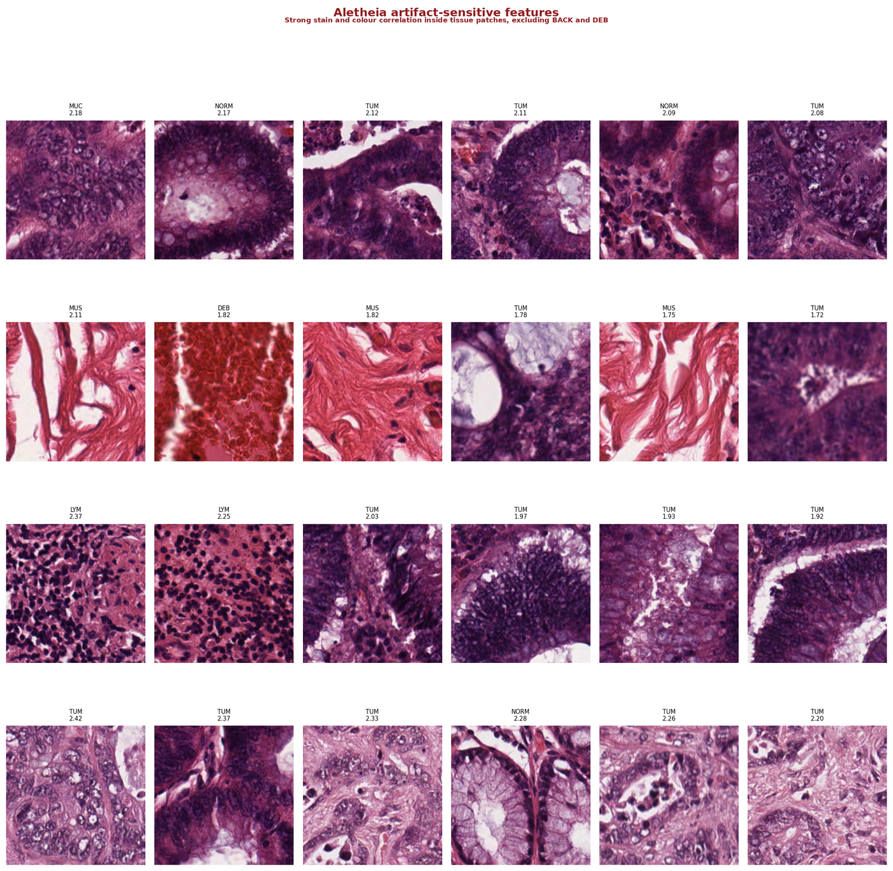
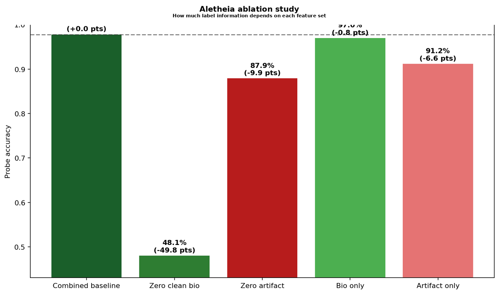
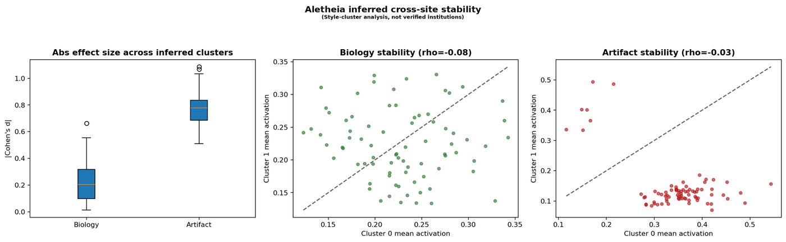
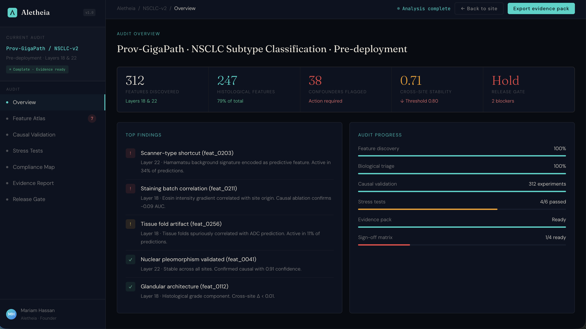
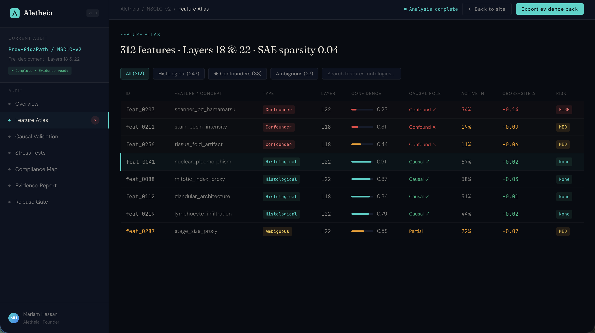

Pathology AI models can score well on benchmarks while relying on features that have nothing to do with biology. A model trained on tissue from a referral hospital using a Hamamatsu scanner might learn "Hamamatsu = aggressive cancer," not because of the tissue, but because the referral centre happens to receive harder cases. Standard explainability tools (Grad-CAM, SHAP) show where a model looks on an image. They cannot tell you what concept the model has formed internally, or whether that concept is a genuine biological signal or a shortcut.
This experiment asks: if we decompose a pathology foundation model's internal representations into individual interpretable features using sparse autoencoders, can we identify which features encode real tissue morphology and which encode staining or scanner artefacts? And can we prove the difference causally, not just by correlation?
The pipeline extracts CLS-token embeddings (1,024 dimensions) from Phikon-v2, trains a sparse autoencoder to decompose them into 4,096 features, then classifies each feature by tissue specificity (ANOVA F-statistic) and staining sensitivity (Pearson correlation with colour properties). 258 features satisfy both thresholds. These are entangled: they encode tissue identity partly through appearance properties. This is the core finding. It is exactly the kind of confound that would cause silent failures in cross-site deployment.
These are the clean biology features: high tissue-type specificity, low correlation with staining properties. Each row shows the eight most-activating patches for a single SAE feature.
The model has learned genuine histological concepts. The normal mucosa features clearly separate glandular tissue from the smooth muscle features: different morphology, different SAE features.
These features tell a different story. They correlate strongly with image-level colour and staining properties rather than tissue morphology.

Look at the patches within each row. They are a mix of tissue types (tumour, lymphocytes, normal mucosa, smooth muscle) but they share intense staining. The model has learned a second classification pathway: "dark staining = dense tissue." Within one laboratory's staining protocol, this correlation holds. Across laboratories with different protocols, it breaks.
Finding features and labelling them is not enough. The question is whether the model actually depends on them. The ablation study answers this by zeroing out matched sets of 79 clean biology features and 79 artifact-sensitive features, then measuring the impact on a tissue classification probe.

The ablation study operates at the probe level: it measures how much a downstream classifier depends on each feature set. To confirm that the shortcut features are part of the model's learned representation (and not just a quirk of the probe), I ran a representation-level patching experiment. I zeroed feature families inside the SAE's reconstruction of the CLS embedding, then re-probed.

Patching the biology features produces a small drop (99.10%). Patching the artifact features does not (99.30%). The artifact-sensitive features are part of the model's actual learned representation, not a downstream classification artefact.
I also clustered patches by inferred staining style (k-means on colour statistics) and measured how much each feature family's activation shifts across clusters.

This audit follows the two-stage architecture from AutoMechInterp, an open-source verification framework I built for mechanistic interpretability (26 methodology iterations; docs at fcistud.github.io/mechanistic-interpretability).
The idea is simple: discovery and verification have to be separate steps. The SAE discovers features. That is hypothesis generation. The ablation study, activation patching, and stability analysis are verification. AutoMechInterp enforces this separation through a deterministic stage-gate with 15 evaluation gates, mandatory negative controls per component type, robustness checks, multiplicity correction, and evidence tiers (cross-model confirmed, single-model confirmed, causal-tested unstable, suggestive, rejected).
I'm packaging this verification workflow into a product that pathology AI companies can use for regulatory compliance. Below is the product prototype: an interactive assurance workspace showing the full audit workflow from feature atlas through causal validation to regulatory compliance mapping.


Under the EU AI Act, high-risk medical AI systems require interpretability evidence by August 2027. This is what that evidence workflow looks like: feature-level assurance with causal validation, mapped to Article 13, MHRA AIaMD, and FDA SaMD requirements.
This is a single-dataset demonstration audit, not a multi-site clinical validation study.
The entire pipeline runs on a single GPU for under £10 of compute. Scaling it into a real assurance service requires running across model architectures and getting access to pathology AI companies willing to pilot.